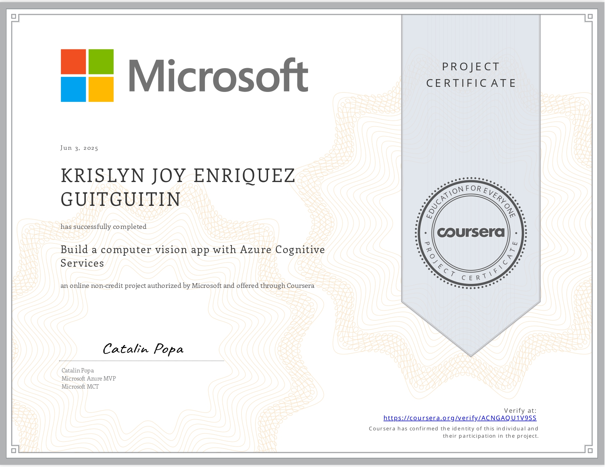
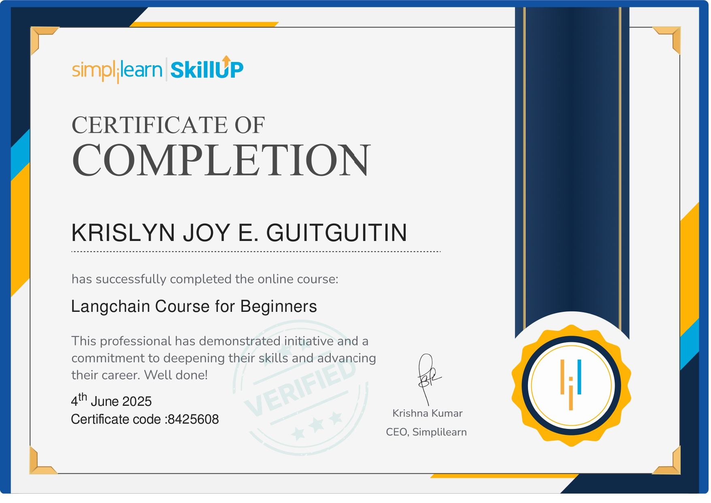
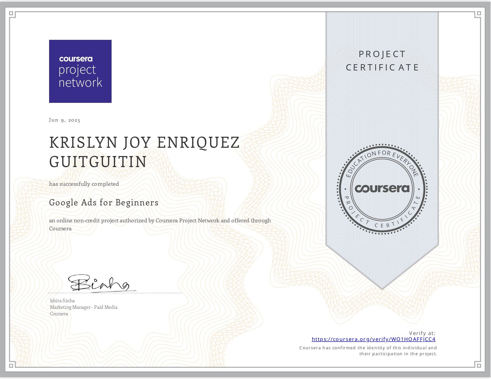

Virtual Assistant & BSIT Student specializing in Healthcare Technologies. I bridge technology and healthcare through design, development, and leadership.
I'm a driven 3rd-year Bachelor of Science in Information Technology student at the University of the Immaculate Conception, specializing in Healthcare Technologies. I'm recognized for taking initiative and leading teams in both academic and project-based settings.
Equipped with hands-on skills in IT infrastructure, systems analysis, and healthcare-focused solutions, I'm eager to contribute my leadership abilities and technical knowledge to a forward-thinking organization in the health-tech space.
Mission: To use technology as a bridge between communities and quality healthcare — making systems more accessible, efficient, and human-centered.
Vision: To become a healthcare IT professional who leads impactful digital transformation projects in the Philippine health sector.
Healthcare Technologies
University of the Immaculate Conception
2023–Present · 3rd Year
Holy Child College of Davao
Green Meadows · 2022–2023
Holy Child College - Trinity (2021-2022)
Cabantian National HS (2017-2021)
Lamb of God SPED Academy (2012-2013, 2015-2017)
Communal ES (2014-2015)
Buhangin Central ES (2011-2014)
Secure a challenging Virtual Assistant role where I can immediately apply my skills in project coordination, technical support, and digital organization.
Grow into a specialized role as a Project Manager or Tech Solutions Consultant for healthcare or tech startups.
I'm passionate about problem-solving and being a catalyst for efficiency. Seeing a task through from a chaotic start to a streamlined, successful finish is what motivates me every day.
Committed to lifelong learning and staying ahead of industry trends through certifications and hands-on projects.
A blend of technical expertise, creative abilities, and soft skills that make me a well-rounded virtual assistant and IT professional.
A track record of leadership, service, and hands-on technical involvement across organizations and industries.
Represented the College of Computer Studies, participating in the drafting and review of student governance policies and resolutions at the university level.
Served as a liaison for inter-department collaboration between Information Technology, Computer Science, and Medical Technology programs.
Participated in the Senior High School Research Congress, presenting a formal research study as part of the Grade 12 academic capstone requirement.
Assisted in day-to-day printing press operations including layout preparation, order processing, customer service, and quality checking of print outputs.
Academic and collaborative projects that demonstrate my ability to design, manage, and deliver real IT solutions.
Led the full project lifecycle — from planning and task delegation to documentation and delivery. Coordinated a multi-person team to build a system for managing student organization records, events, and memberships.
Designed the full user interface and experience for a booking and inventory management system tailored for UIC medical technology students. Focused on intuitive navigation, accessible design patterns, and user testing.
A mock healthcare patient portal concept featuring appointment scheduling, medical record access, and doctor-patient messaging — designed with accessibility and mobile-first principles in mind.
A comprehensive 30-day social media content calendar for a mock health-tech startup, including post copy, hashtag strategy, platform-specific formatting, and engagement tracking template.
A consistent record of academic excellence, leadership, and competitive performance.
Champion – Vocal Duet Competition at the PSITS Region XI Festival of Talents
Jingle Songwriting Competition at PSITS Region XI Festival of Talents
Consistent Dean's Lister: 1st Year (1st & 2nd Sem), 2nd Year (2nd Sem), 3rd Year (1st Sem)
CHED StuFAP Full Scholarship recipient at UIC, 2023–2027
Accepted into the Marian Technology Business Incubation Program in 2020
3rd place in the Tower of Hanoi Competition at Math-Sci Event Region XI, 2019
Online certifications and professional development courses completed through Coursera and Simplilearn.



Interested in working together or have a project in mind? I'd love to hear from you.